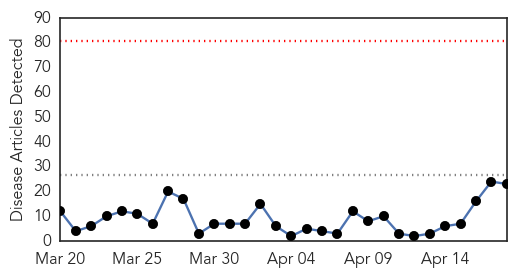
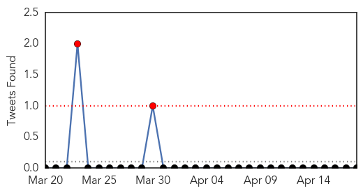

Influenza
30-Day Web Trend
0 alerts, 0 warnings

30-Day Twitter Trend
1 alerts, 0 warnings

Article Locations

Article Confidences

Top Articles:
- 0.983
- Asian dog flu hits Chicago
- 0.973
- Dog flu outbreak strikes Midwest
- 0.955
- Glaxo recalls flu vaccine due to potency problem
- 0.942
- 1230 AM Terre Haute, IN
- 0.819
- Legislature working on funding to fight H5N2 - MarshallIndependent.com
- 0.751
- April 18, 2015 Archives
- 0.751
- April 18, 2015 Archives
- 0.751
- April 17, 2015 Archives
- 0.751
- April 17, 2015 Archives
- 0.751
- April 17, 2015 Archives
- 0.751
- April 17, 2015 Archives
- 0.707
- Bird Flu Crosses Species Barrier to Spread Among Dogs
- 0.639
- Cairns health workers refuse free influenza shot
Top Tweets:
-
No tweets found for Apr 18, 2015
Measles
30-Day Web Trend
0 alerts, 0 warnings

30-Day Twitter Trend
1 alerts, 0 warnings

Article Locations
Article Confidences

Top Articles:
- 0.984
- California declares measles outbreak over
- 0.980
- California health authorities declared an end to a large “Measles Outbreak” which began at Disneyland
- 0.976
- California measles outbreak over
- 0.974
- Measles outbreak linked to Disneyland declared over
- 0.973
- Large measles outbreak traced to Disneyland is declared over
- 0.964
- Californians, Health Authorities Celebrate Official End Of 4-Month Measles Outbreak
- 0.961
- Calif. Measles Outbreak is Over, State Says
- 0.956
- California Too Officially Declared Free From Measles Outbreak After Disneyland
- 0.947
- California Authorities declare Disneyland Measles Outbreak Over
- 0.946
- Disneyland Measles Outbreak Declared Over
- 0.935
- Measles Outbreak is Over; LA County Had Second Highest...
- 0.934
- California's measles outbreak is over, but vaccine fight continues
- 0.933
- California declares end to measles outbreak
- 0.929
- Finally, State Health officials Declare End of Disneyland Measles Outbreak
- 0.914
- An anti-measles vaccination campaign targeting over 2,6 million children starts Sunday
- 0.912
- Disneyland Originated Measles Outbreak is Over!
- 0.879
- Cheers to 35 years of good health
- 0.850
- California health authorities declare measles outbreak defeated and over with
- 0.828
- Disneyland measles outbreak declared officially over
- 0.818
- California's Measles Outbreak Is Over, But Vaccine Fight Continues
- 0.690
- New push for Measles Vaccinations after California Outbreak
- 0.690
- California health officials declares measles outbreak over as vaccine fight continues
- 0.608
- Northern Voices Online Disneyland measles outbreak pronounced over, no new case in 42 days
Top Tweets:
-
No tweets found for Apr 18, 2015